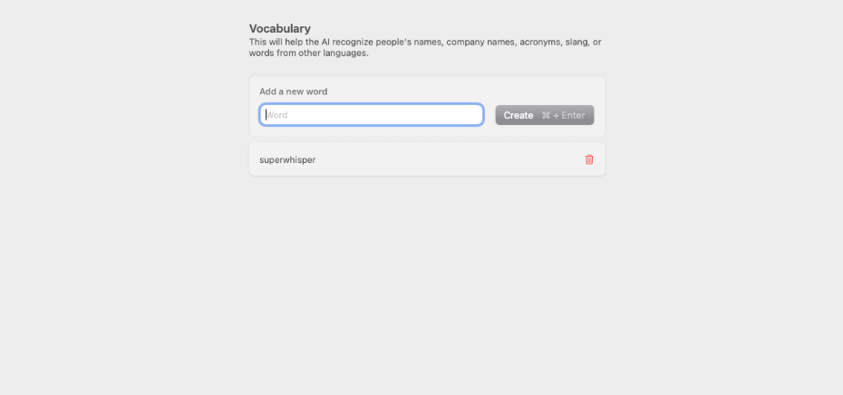

Vocabulary
Introduction
Similar to the Text Replacement feature, Superwhisper can remember or a set of user-defined words or a vocabulary given by a user.
An alternative solution to replacing commonly unidentified text is to use the define them in the vocabulary option instead.
Steps
